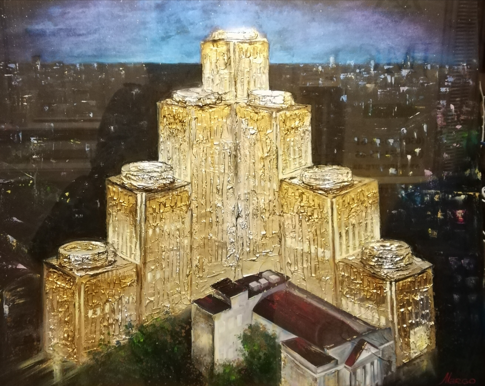
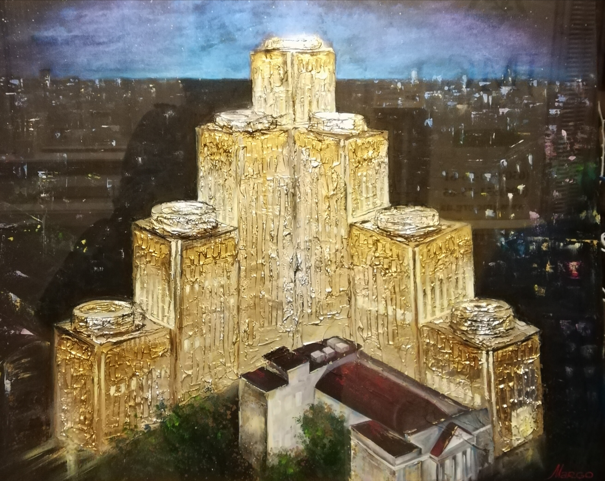
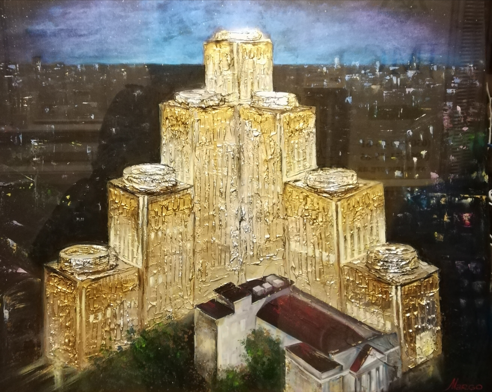

МЕНОРА

 

«Менора» — уникальное сооружение и крупнейший в мире еврейский комплекс, аналогов которому нет в мире. Центр состоит из семи башен, символически представляющих собой подобие Храмового семисвечника. На площади около 50 000 кв.м. разместились самые разнообразные сервисы для жителей и гостей города. Идея создания такого уникального объекта как центр «Менора», а также полная реализация проекта стала возможной благодаря Президенту Днепропетровской еврейской общины Геннадию Борисовичу Боголюбову и Президенту Объединенной еврейской общины Украины Игорю Валерьевичу Коломойскому. Духовность, культура и бизнес – три составляющие, заложенные ими в проект под названием «Менора», стали фундаментом центра.
